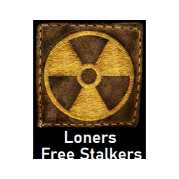

LOCATION DATA
Cordon
Settlement
Rookie routes, traders, patrols.
Faction unknown
Edit your full Stalker Card in the ID tab.
Messages are shared with logged-in StalkerNet users.
AI chatter is local atmosphere only. Human messages remain the default broadcast feed.
Settlement
Rookie routes, traders, patrols.

Faction unknown // Rank unknown